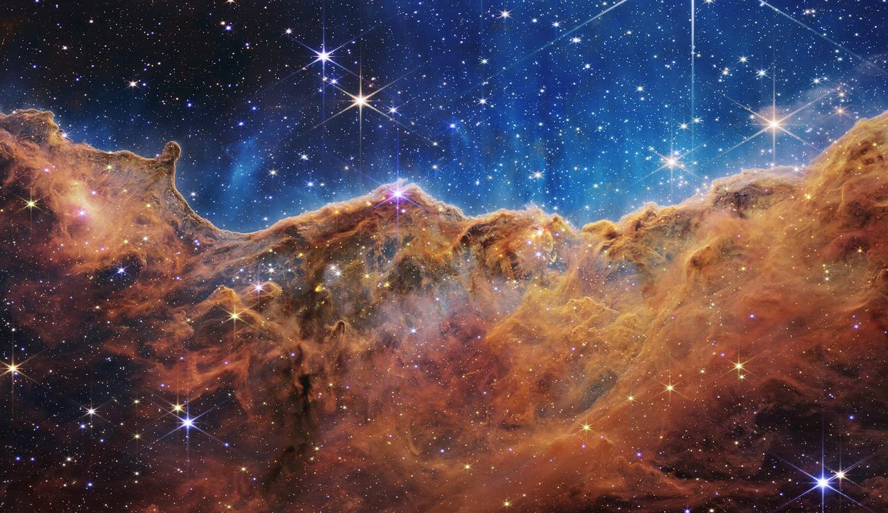
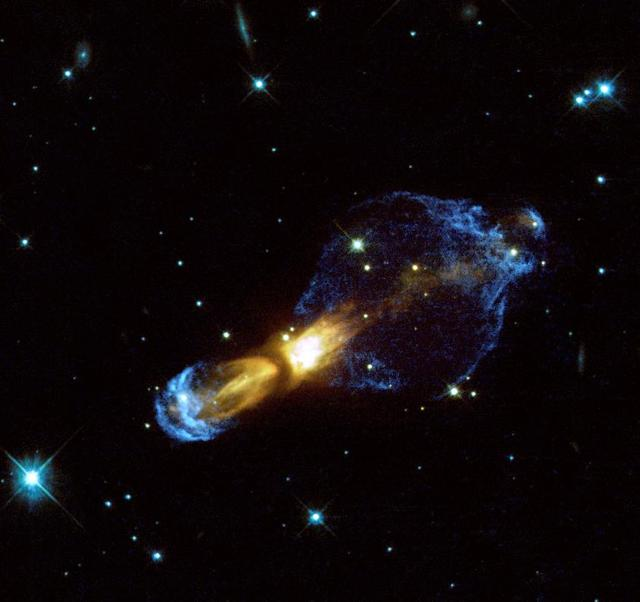

N E B U L O S A S
¿Qué telescopio es mejor para ver el cosmos?
- James Webb?
- Hubble?
Caracteristicas del Webb y el Hubble
- El Telescopio Hubble se llevó a órbita en abril de 1990 y el James Webb en diciembre del 2021.
- El Hubble se encuentra a 593 kilómetros de la tierra, mientras que el James Webb está a 1,5 millones de kilómetros de la misma.
- El telescopio Hubble pesa 11 toneladas, mide 13.2 metros de largo y tiene un diámetro de 4.2. El James Webb pesa 6 toneladas y media, y su tamaño es tan grande que, para transportarlo en un cohete, se necesitó doblarlo para que luego se desplegara en el espacio. Su tamaño es como el de una cancha de tenis.
- El espejo primario del telescopio Hubble posee un diámetro de 2.4 metros, mientras que el James Webb está equipado con un espejo primario conformado por 18 partes de forma hexagonal que en conjunto tienen un diámetro de 6.5 metros.
- El James Webb tiene capacidad para observar objetos 100 veces menos perceptibles que el Hubble.
- El costo del Hubble ascendió a más de 2 millones de dólares, mientras que el James Webb alcanza los 10 millones de dólares.
- Hubble es un telescopio reflector que trabaja con base en las longitudes de las ondas ópticas y ultravioleta. El James Webb funciona con luces infrarrojas; es del tipo anastigmat con tres espejos y un campo más amplio de visión superando hasta en 100 veces la capacidad del Hubble.
¿Comó se forman las estrellas en una nebulosa?
¿Dónde están las nebulosas?
¿Cómo sabemos cómo se ven las nebulosas?
¿Qué es una nebulosa?
Una nebulosa es una nube gigante de polvo y gas en el espacio. Algunas nebulosas provienen del gas y el polvo expulsado por la explosión de una estrella moribunda, como una supernova. Otras nebulosas son regiones donde comienzan a formarse nuevas estrellas. Por esta razón, algunas nebulosas se llaman "viveros de estrellas"
¿Comó se forman las estrellas en una nebulosa?
Las nebulosas están hechas de polvo y gases, principalmente hidrógeno y helio. El polvo y los gases en una nebulosa están muy dispersos, pero la gravedad puede comenzar a juntar grupos de polvo y gas. A medida que estos grupos se hacen más y más grandes, su fuerza gravitacional se hace más y más fuerte. Finalmente, el grupo de polvo y gas se vuelve tan grande que se colapsa por su propia gravedad. El colapso hace que el material en el centro de la nube se caliente, y este núcleo caliente es el comienzo de una estrella.
¿Dónde están las nebulosas?
Las nebulosas existen en el espacio entre las estrellas, también conocido como espacio interestelar. La nebulosa conocida más cercana a la Tierra se llama la Nebulosa Helix. Es el remanente de una estrella moribunda, posiblemente una parecida al Sol. Está aproximadamente a 700 años luz de la Tierra. Eso significa que incluso si pudiera viajar a la velocidad de la luz, ¡todavía le tomaría 700 años llegar allí!
¿Cómo sabemos cómo se ven las nebulosas?
Los astrónomos usan telescopios muy potentes para tomar imágenes de nebulosas lejanas. Telescopios espaciales de la NASA como el Telescopio Espacial Spitzer y el Telescopio Espacial Hubble han capturado muchas imágenes de nebulosas lejanas.
Haz click en esta imagen para sorpresa
